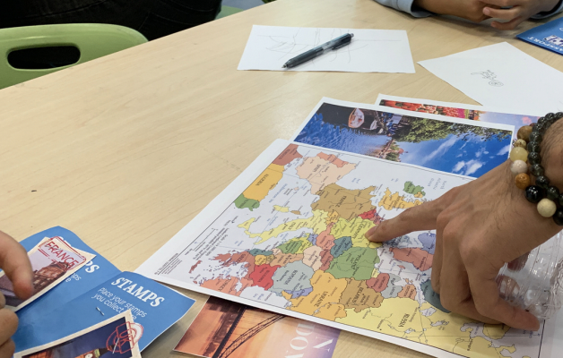
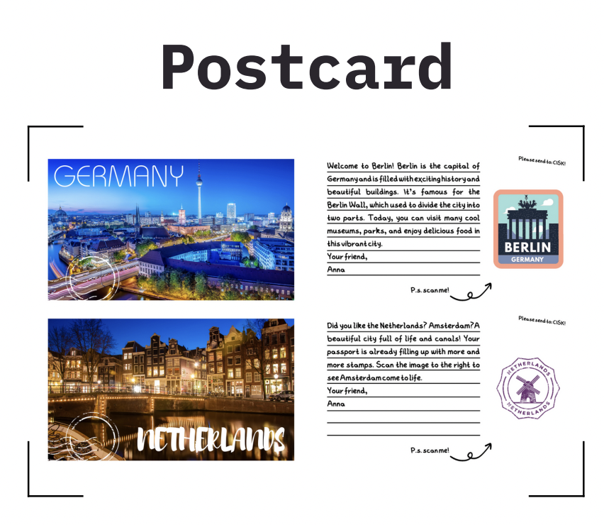

VisitAR
The world is becoming more interconnected, yet geographical knowledge and cultural awareness often remain limited, particularly amongst younger generations. This disparity became our focal point as we endeavored to devise a solution that would be both engaging and educational for children. Our target users are children aged between 6-9 years old, primarily residing in urban areas, with access to educational resources and digital devices.
We chose to focus on the amalgamation of augmented reality (AR) technology and tangible toys to create an immersive, interactive, and educational game. This game aims to enhance children's understanding of geography and foster cultural awareness. We selected this approach based on extensive research and observations, which indicated that children often learn better when they can interact physically with the learning materials.
Our final product is an innovative blend of tangible toys and augmented reality (AR), designed to create an immersive, interactive, and educational experience that enhances geographical knowledge and cultural awareness in children aged between 6-9 years old. The AR-enabled game uses a global map, along with a set of tangible mini-games, each associated with a specific country.
Click here to see more details: Here